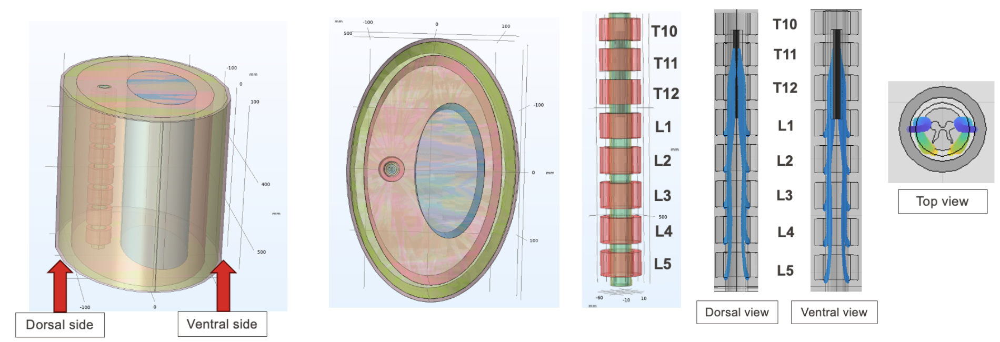
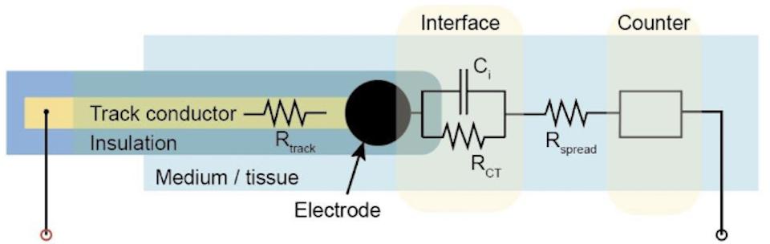
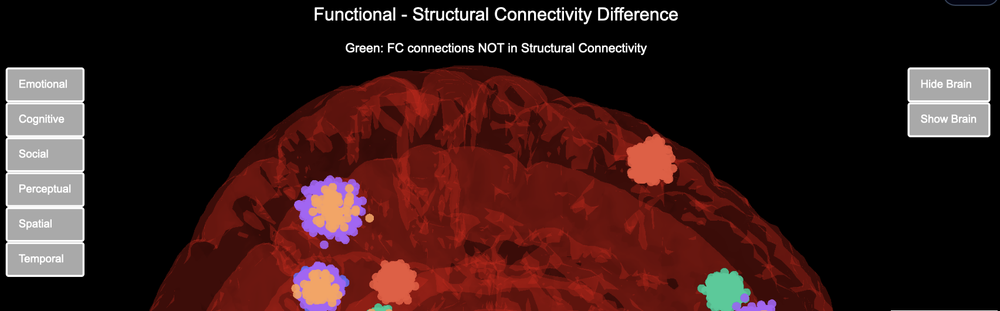
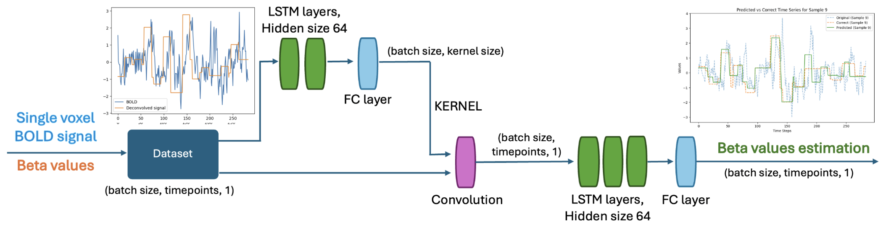

I am a Master’s student in Neuro-X at EPFL, specializing in neuroengineering and computational methods. I have a strong foundation in engineering, data analysis, and biomedical systems, and I enjoy working on complex problems at the intersection of hardware, software, and medical technology. I am particularly interested in the development of medical devices and technologies that can improve patient care. I bring the same discipline and teamwork from competitive volleyball into collaborative engineering projects.
Python · MATLAB · C · Java · COMSOL · HTML · JavaScript · VHDL

Hybrid computational model combining FEM and neural dynamics to study spinal cord stimulation strategies.

Characterized kirigami-based soft electrodes through ageing studies to assess long-term neural implant stability.

Analyzed hundreds of thousands of subreddit hyperlinks to uncover community structure and functional connectivity.

Trained RNNs on Human Connectome Project fMRI data to predict task timecourses via blind deconvolution.